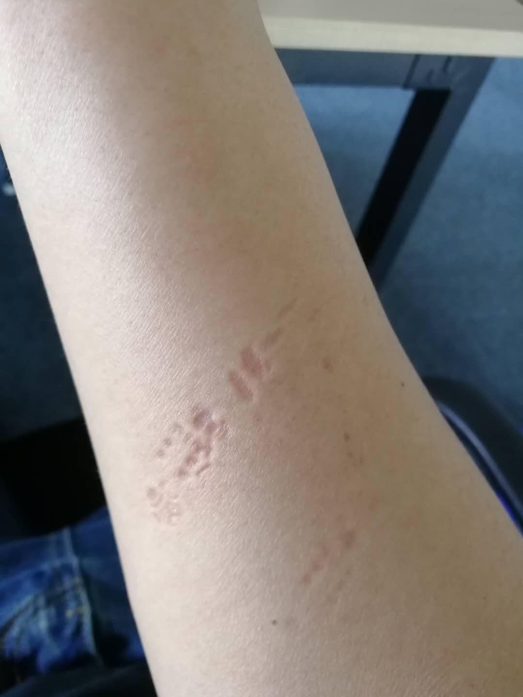
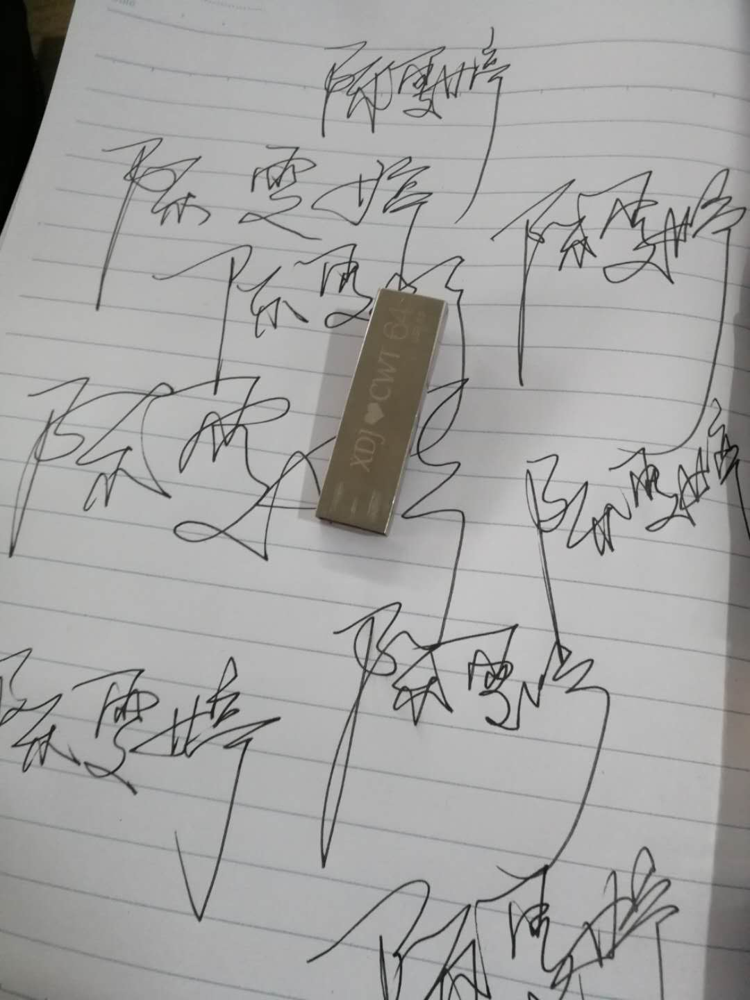

2018年
2018.1.7-2018.2.15 讲了不记得多少八卦共计593分
2407 昨晚喝了一点酒忘记扣分了然后 2.15 扣50
2357 好几天没扣了扣10分 2.20
2347 等你晚上看了红海行动吧，外面还下雨了回来扣20分 2.22
2327 我和你讲表弟的故事扣150分 2.23
2177 日常扣分扣7分 2.24
2170 送雯雯上学哦扣100 2.28
第一批2个多月扣了930分
2070 在学校第一次面对面扣分扣了70 感觉有点少哦 3.1
2000 2000分新的开始 是时候扣一下分了10带走 3.3
1990 每天都意思一下，然而并不是今天3.5号了10分哦
1980 这下憋了好久了都一个礼拜了，扣个30够意思了吧 3.13
1950 你为什么要这么省啊磨破了嘴皮才扣10分 3.14
1940 日常10分3.15
1930 打电话跟你说了点汪奇迹的八卦你就扣5分白讲了，不过打了电话给你就算了5分就5分3.17
1925 睡觉前扣点分5分，越扣越少3.18
1920 意思下下反正她是这样说的5分 3.19
1915 磨破了嘴扣15分，第一次没打折3.20
1900 我这几天其实很烦，扣了5分 3.23
1885 上厕所不带纸这么丢人的事都说了，你现在都扣好多了就扣20分，其实我也开心哈哈3.25
1865 意思意思哦。明天上班喽。3.26
1860 打电话了哦。吹了一个小时，讲了个小秘密扣50分，哈哈。好久没有扣这么多的分了3.27
1810 我把我小时候的事都说了扣50 3.28
1760 扣5分 3.30
1755 你今天为什么喜欢你喜欢你什么。好突然哈哈3.31
3月扣了330分，已经走下降趋势了。没故事了怎么编
1740 一个小八卦才5分 4.1
1735 雯雯最近应该学习很认真吧，临睡前我叫她扣分，当然是5分了，想都别想10分 4.3
1730 今天雯雯11点半就睡了，这个大傻子还说中午没睡着累了，我都不忍心打扰她。4.5
1725 最近吧，雯雯晚上抽筋，我就买了好多补钙的水果，好像我又瞎买了，哈哈 4.6
1715 今天出去玩了我还给雯雯发了照片，还说不帅，结果还真的只扣了5分 4.7
1710 雯雯今天去配眼镜，竟然850℃，哇，要瞎了要瞎了。4.8
1700 扣了5分好累雯雯现在好早就要睡了 4.9
1695 我第一次偷偷扣分，还跟你说了，不算偷偷 4.10
1690 我把所有密码都给你换了10分4.13
1680 5分4.14
1675 傻雯，分扣的好慢啊，要扣到你考完研吗？10分4.15
1665 好吧，那就扣5分吧，你都不扣10分啦4.16
1660 雯雯说你自己扣5分呗然后11点半就睡了。要考试了你，我也不跟你讲价了4.17
1655 吓死我了，你竟然说要加10分哈哈。结果扣了5分还好还好。I'm not greedy. There's only one small wish. There's always you in my life.4.18
1650 The man you can think of when you open your eyes must be in love.复习英语了哈4.19
1645 The most romantic and selfish thing in the world is: you are one of me雯雯明天考试了，我不能打扰她了，自己偷偷扣5分哈哈。你是我的4.20
1640 今天你英语考完了没考好，以为你心情会不好，没想到还好，扣5分4.21
1635 你自己扣吧，我睡了，没出息的扣了5分4.22
1630 今天宜春下雨了，可是你今天这么早回去都不给我拍照，你扣10分就好了，我现在要求很低4.23
1620 妮娜妮娜娜尼5分4.24
1615 5分哦我家雯雯最好了4.25
1610 雯雯雯雯雯雯打了电话哦今天5分4.26
1605 我说雯雯你考研干嘛考到沙田中学去啊哈哈，扣20还嫌多了现在真的变的快哦4.27
1585 我就假装问下你干嘛不去看后来的我们这部电影，你还记得要跟我一起看哈哈 4.28
1580 我好想回学校了，。五一放假上三天班，我就准备回去哈哈4.29
1575 今天去宁波看好累，雯雯又看了一天书，真的是累，你懂的。4.30
这个4月才扣了175分以前一天都扣200分🙁
1570 晚安5.8的节奏要到1月25号。不长吗哈哈5.1
1565 哎呀哎呀人呢人呢，雯雯今天逃课了，我记着。哈哈5.2
1560 今天不扣分哦不扣分呀。哈哈。给我发照片😛5.3
1560 我没请到假，本来可以早点回去见你的。然后我明天加班吧。你懂的 5.4
1555 我明天不知道能不能回学校，如果可以我就飞奔回去，给你个抱抱哈哈。5.5
1550 你懂的。明天我回去我要打你(开玩笑我对你最好了)5.6
1545 明天就可以见到你了哈哈5.7
1540 似乎今天见你没有很特别着急，因为还去和别人吃饭。我本来想带你一起的。唉。我好像是胖了我，不过今天还扣了10分
1530 雯雯雯雯是看后来的我们还哭了，真是没出息，其实今天晚上我有好几次想拉手，然后我还是怕影响你学习哈哈，还是我胆小哦。5.9
1510 其实吧，我有点傻逼，我干嘛问你可不可以拉手，我呀，就应该拉的哈哈。万一雯雯要生气怎么办。她会不会打我，我又不敢还手5.10
1490 其实我今天就碰了下你的手你就拿开了。我不开心。你扣20分。然后我看了下手机就马上就12号了，我13号就走。我真的很不想很不想不想。。。。。我回去就又要每天想你想你想我。。。可是我回去要好好工作，我我不能打扰你学习了。晚安雯雯。5.11
1470 明天回去了今天拉手拉了5秒钟。 5.12
1465 今天下午五点多的车，我就走了。雯雯来目送了一下。哈哈哈。我也不喜欢别人送我，但是。我还是好想你。我不打扰你学习，你好好考研，等你考上了，我就。。。晚安早点休息哦。今天中午去找房子没睡觉吧。。。5.13
1460 我说了吧，雯雯还是最好的。我说扣5分她偏要扣10分。哈哈。你好好学习我给你买冰棍吃5.15
1450 想你想你想我，雯雯这么热还要学习。5.16
1445 我买了件情侣装5.17
1440 雯雯给我发以前的照片，我都看到那么多照片。后面就给我发一张唉。。你变得不好了。还扣5分 5.18
1435 还有五分钟就520了，你就睡觉了。你就是故意的。唉。越来越不听话了。5.19
1430 唉唉唉唉唉唉爱爱爱爱爱爱爱唉唉唉唉唉。辛辛苦苦发红包一个不领，辛辛苦苦找头像一个不换，辛辛苦苦想你，你一点不想哦。520哦还好扣了20分520
1410 今天521头发，手给你东西。5.21
1405 5.22我想做什么呢？想你了5.22
1400 我给雯雯讲我结婚了，雯雯宝宝不要我了。哈哈。5.23
1395 我马上就能回去见你啦。我好想你啊。雯雯你累不累啊，累了回去的时候别看书了好好陪我几天哈哈。。。。。5.24
1390 明天回去了，其实我想，没什么好想的，其实有点想，就一点睡觉5.25
1380 在学校了。我来找你喽，可是今天并不开心啊。因为。。。。你昨晚老早回去寝室了5.27
1375 其实在学校你也是好好读书然后我们见面就是难哦。怎么办，分又扣分少5.28
1370 昨天晚上你跟我在一起了两个小时了，哈哈，然后扣了五分，你还说以后都扣5分5.29
1365 昨晚真的真的唉。你不让我拉手我就生气啊，拉个手怎么了真的是我那么有毒吗5.30
1360 今天是我们第一次亲嘴吧，不是接吻，昨晚毕业酒会我一个人真的是难过，但是今天晚上出来我竟然还亲。我亲你三下，我好害怕你要加280分5.31
这个月更是只扣了190分然后嘞还血崩加了280分。我这个月打酱油了。
1360+280我 这几天在学校啊都不扣分，分加的我没心情了扣分我们儿童节出去玩啦今天我们在批私人影院接吻了6.1
1350 后天就要走我真的好难过，今年不能来找你了我怎么办啊。宝宝。6.3
1345 宝宝跟我去开房了，虽然过程很刺激，但是还是很刺激哈哈。我起来就要走了。宝宝要好好考研，我怕今天开房会影响你，虽然晚上很难控制的了自己所以还是控制了一下，你要加油哦爱你 6.4
1345 今天走了，早上老早送雯雯回寝室了，雯雯眼镜没用了，今天她一天都在图书馆教室打瞌睡，辛苦了辛苦了，都怪我昨晚太厉害了。晚安6.5
1335 去内蒙的第二天，特别干，也没有什么感觉，就是感觉突然失去了什么，感觉，晚上见不到你了。还要明年找你很难受6.6
1330 今天扣5分吧好累啊。我爱你6.7
1325 今天去了沙漠把自己给晒黑了，在沙子里写了陈雯婷少了四个点哈哈，还说丑，但是我写你的名字就感觉很开心啊。你要好好读书，考研，我赚钱养你哦手机还有百分之6的电你说扣6分6.8
1319以后都自己扣5分吧。雯雯这样说的。我想等你考研结束后是不是能多扣点。到时候我就要套路你，现在让你安心读书行了吧。哈哈？6.9
1314 这次毕业旅行也结束了，要回去好好赚钱了。雯雯今天在学校听讲座，好累的，昨晚还23点睡觉，我真的想好好的好好的照顾你哦，看你这么累，早上给你寄东西吃，我都想把自己的都寄给你哈哈，宝宝你要好好学习，晚安，今天扣14分哈哈6.10
1300+280扣5分吧。回来就感觉还有6个月好久，但是'之前6个月就很快啊。傻6.11
1295 今天扣10分啦，我还给你发了我的自拍，是胸的自拍哈哈。我每天做俯卧撑，我到时候给你靠下吧哈哈6.12
1285 哈哈，雯雯现在接我电话还是有点厉害，以前整天不接我电话说没看见应该是骗我的吧。我都知道，是不是。整天不接我电话以前。现在很乖哦。6.13
1280 雯雯今天发生了什么我要说什么。反正就是我想你了，还要想多久呢。我要是拿着以前的脾气我就冲回来找你了。可是我长大了哈哈。6.14
1275 今天雯雯还是很乖的去看书了，明天考六级了要加油哦，过两天就可以开视频了哈。6.15
1270 今天雯雯考六级了，感觉考的可以啊，还去看了场电影，还跟娜娜去看的，看不懂你们两个，前天还那个那个。晚上开视频还不给我看，不就没化妆，不就穿个内衣，我看下又不会怎样。哈哈。你内衣哪里清凉了，我都看过，还好说明天继续开。你今天说你是我的女朋友了了。不能反悔啊宝宝哈哈6.16
1765 今天在家一回来我就开视频了，看了十来分钟你要说去洗澡等下开，我就知道你等下不给我看的，还是说穿内衣，看下你又不吃亏呀。我哈哈。是不是有点过分啊。哈哈爱你6.17
1760
你说让我回去天，我就立马买了车票哈哈。晚上8点半到了宜春。想帮宝宝整理房间。宝宝要看电影，后面太热了就改天了。宝宝真是好 7.1
昨天晚上我和宝宝睡觉了。其实我自己也挺后悔的，怕影响宝宝，但是我没控制住希望宝宝好好考研。以后读研究生，我就可以好好照顾你了晚上去看了一部电影，叫泄密者，其实我觉得是不怎么好看的哈哈。7.2
今天回去了，宝宝已经两天没有去看书了，而且这两天宝宝都没有好好吃饭。希望我回去的时候能够好好的。早上7说要去看书还是起床后来到床上陪我，下午的时候走了。又感觉失恋了。哈哈。7.3
今天宝宝生病了去医院，还因为和娜娜吵架又一个人在医院哭，打电话哭的时候我已经往车站走了。我不在的时候你生病哭的时候我真是好难过7.7
好久没写了。今天宝宝睡得比平时早15分钟，可能真累了，好心疼。坚持到考完研，以后好好的。我还要好好照顾你呢。我爱你7.24
…………
2019年2.14日今天我们在东方明珠吃自助餐了，我们一起过情人节，很浪漫的诶，宝宝真好
2019年10.2日今天我们去南京了，我们吵架了，她说我没有准备好，我下次一定会注意的
2020年1.1我们今天一起跨年了，吃着烧烤喝着奶茶跨着年，太开心了。
2020年4.25
猪猪，对不起。最后叫你一次猪猪吧。这次你还是听我的，我们分手吧。对不起，对不起，是我先放手了。我爸妈不同意，我其实特别在意我妈的想法，我骗了她快两年。我终究是那个听爸妈话的孩子。我们不要联系了，也不要再发信息给我爸了，你继续发的话，我会被他骂的更惨。如果你希望我过得好的话，就不要再打扰我了。
是我放开了你的手，是我把你丢了。我不爱你，我从来都没说过我爱你。我很自私，我爱我自己，我甚至不记得我们几号在一起的。我知道你对我很好很好，我以后应该遇不到像你这样子对我的人了。可是你的好在现实面前真的不堪一击。
以后，你不是我的猪猪了，我不是你的老大了。
你很好，真的很好，只是我们不合适，对不起，分手吧
2020年5月4 03:15 我想好了，我要努力带你回来，我要落户台州,你可以过你得生活，我不要你陪着我，到最后如果我输了，让我一个人输。如果你遇到了一个喜欢得人，我会放下你得，我也会祝福你得。
2020年5月6 我忙起来了，我已经在努力。你今天中午有没有午休啊。今天没有晚修 你要不要回家，今天要不要开会。今天晚上你会吃什么。今天有没有想喝奶茶？今天有没有发生什么开心得事，有没有什么不开心得事，有没有笑过，有没有想我，我控制了一个白天了，晚上还是给你发消息了。鞋子你会穿嘛？在你心里我们还有没有可能？我还是每隔一会就会看看你有没有给我发消息，我不想打扰你，我真的希望你有什么事可以跟我说，我有好多好多话想跟你说。我可能每天都在想这个问题。晚上我在想你要是有男朋友有对象得话，我会不会崩溃掉。我可能从来没想过你以后会和别人过一辈子。我为什么最近总是这样想。你应该也不会再来这里看了吧。我会加油得，我会跑起来得。今天我去做了很多事，也许明天去上班之后会更忙吧，我有很多很多得事都没有去做，我会慢慢来得。
2020年5月8 昨天晚上做了一个梦，我梦见你告诉我你要结婚了，你已经去了那个男得家里，但是你不情愿，你妈是同意得，你说那个男得是个气象主持人，工作挺好得，家里也挺好得，马上就结婚了，我去路上看见一辆车，我准备去找你，一路上我哭得路都看不清楚，但是我还是猛踩油门，后面我得车翻了，我站起来走路去找你。醒来得时候，我马上找手机，我发现你还没结婚，我当时有点开心，又很难过，我要是醒来我们还在一起那该多好啊。今天一天我都在想要是那一天你真的变成别人得人了，我会不会和梦里一样疯掉。我每天都在努力得为了能够有一天，能抱着你，对你说我们又可以永远在一起了。我不累，但是我真的希望你有一天会支持我，而不是现在一样。难道我们从一出生就没有再一起得可能了嘛?让你觉得没一点希望了。我每天晚上都控制不了自己。即使我忙到晚上十点回家。我真的想知道你有没有想我。
2020年5月11日 我答应过你好好生活，我可以做到再白天好好的去工作，好好的努力，晚上吃安眠药也没用。我没有一天假期，我每天都是很忙，我应该从那天开始就没怎么睡觉了吧。每天三个小时，我再也没有睡懒觉了，今天中午我好像很累我睡着了，睡醒了手上链子的印子又让我发疯了。我拼命的写着你的名字，找到了u盘。我很累，我很想再多睡会。


2020年5月17日好像好久都没有放假了，我真的感觉到我很累，但是我真的不想休息一天。
我最近真的不能在修下【-的爱上离开家离开了从；李东分坑；里慢慢慢慢 ，， ，，，， 了
2020年5月22日 岁月是一场有去无回得旅行
2020年5月26日 为什么我得情绪总是这么不稳定呢，我今天太空了嘛？我觉得我就是在煎熬了，我突然不知道自己要干嘛了。怎么办
我不知道我还能干嘛呢？傻坐着一下午了。什么也没干，都在这里想事情了。我能不能可以有一点事情做。
2020年6月2日 哪天你觉得你放下了，我去找你见一面好不好。
2020年6月8日 我想死了，我感觉所有人都没有烦恼，就我一个人脑子里每天都装着很多事
2020年6月10日 对不起，我欠你太多了。。。。。。
2020年6月15日 为了知道你再干嘛，我都假装放下了
2020年7月6日 我情愿喜欢着一个不可能得人，也不愿意认真去跟一个人在一起。我谈了一个礼拜放弃了我什么都不想做拉手我都觉得对不起你，但是她做任何一件事我都会去想你肯定能做得更好。我是渣
2020年8月21日 快七夕了诶